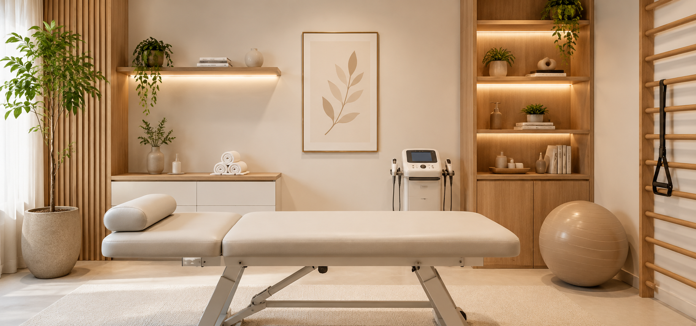

Reabilitação neurológica no conforto da sua casa
A Dra. Fernanda vai até você. Atendimento domiciliar especializado em neurologia, geriatria, pediatria e reabilitação pós-AVC, com o mesmo nível técnico do consultório, sem você sair de casa.


A recuperação começa no lugar mais confortável: a sua casa
Levo tudo que sua recuperação precisa: faixas elásticas, bolas, cones, equipamentos de liberação miofascial e muscular. O único item que não está na mala é a maca — tudo o mais chega com a Dra. Fernanda na sua porta.
Agendar atendimento em casaÁreas de atuação
Formação sólida nas especialidades que mais exigem precisão e cuidado individualizado
Fisioterapia Neurológica
Especialidade principal. Reabilitação de pacientes com lesões e disfunções do sistema nervoso central e periférico, com técnicas validadas cientificamente.
- Reabilitação pós-AVC (acidente vascular cerebral)
- TCE (traumatismo cranioencefálico)
- Doenças neurodegenerativas (Parkinson, ELA)
- Lesão medular e periférica
Pós-AVC e Pós-Cirúrgico
Foco total na recuperação funcional. Trabalho de reaprendizagem motora, controle postural, marcha e independência para atividades da vida diária.
- Reabilitação motora e sensitiva pós-AVC
- Pós-operatório ortopédico e neurológico
- Recuperação de mobilidade e força
- Retorno à independência funcional
Fisioterapia Geriátrica
Cuidado integral para o idoso: mobilidade, equilíbrio, prevenção de quedas e manutenção da autonomia com qualidade de vida.
- Prevenção e reabilitação de quedas
- Osteoporose e artrites
- Equilíbrio e marcha no idoso
- Manutenção da independência funcional
Fisioterapia Pediátrica
Desenvolvimento neuromotor da criança desde os primeiros meses, com estimulação precoce e tratamento de condições neurológicas infantis.
- Estimulação precoce e DNPM
- Paralisia cerebral
- Síndromes genéticas
- Atraso motor e cognitivo
Formação que faz a diferença no tratamento
Sou a Dra. Fernanda Rodrigues, fisioterapeuta especialista em Neurologia, Geriatria e Pediatria. Escolhi o atendimento domiciliar porque acredito que a recuperação acontece melhor em casa — no ambiente familiar, com segurança e conforto, longe do estresse de deslocamentos.
Cada paciente tem um ritmo e uma história. Chego até você com tudo que preciso: faixas elásticas, bolas terapêuticas, cones, equipamentos de liberação miofascial e muscular, entre outros recursos. Monto um plano personalizado com metas claras e acompanhamento constante — tudo no conforto da sua casa.
O que dizem os pacientes
Relatos reais de pacientes e familiares (com autorização)
"Minha mãe teve um AVC em março e começou o acompanhamento em abril. Em três meses ela já voltou a andar com apoio. O cuidado e a dedicação fazem toda a diferença."
"Meu filho tem paralisia cerebral e nunca encontrei uma profissional tão comprometida com a evolução dele. Ela explica tudo, envolve a família e celebra cada conquista."
"Operei o joelho e a recuperação foi incrível. Voltei a fazer minhas atividades em tempo recorde. Profissional excelente, explica cada etapa do tratamento."
Pronto para começar a recuperação em casa?
A primeira avaliação acontece na sua casa. Vamos entender sua história e montar um plano de tratamento real, pensado para sua rotina.